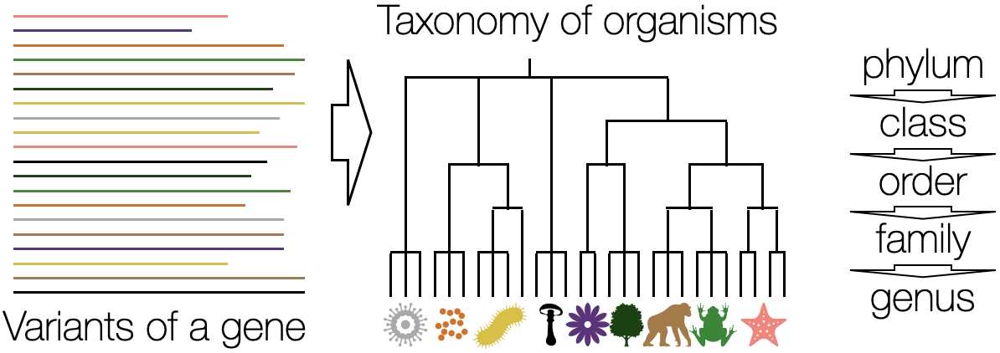
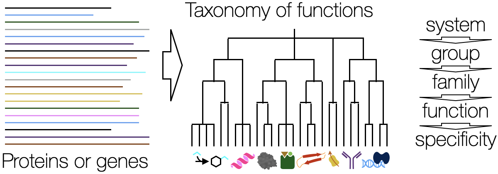

IDTAXA Classifier Overview
The IDTAXA algorithm can quickly and accurately classify nucleotide or amino acid sequences into a taxonomy of organisms or functions. IDTAXA is composed of the LearnTaxa function to train a classifier based on a reference database and the IdTaxa function to classify new sequences into a taxonomy.Why use IDTAXA for classification?
- IDTAXA excels at avoiding classifying sequences to groups when their true group isn't present in the training data. This is a common issue in biological datasets because reference databases typically represent only a small fraction of the possible diversity.
- IDTAXA is more accurate than common alternative approaches on both nucleotide and protein sequences.
- Multiple pre-trained classifiers are provided on the Downloads page.
- Unlike many other classifiers, IDTAXA will not assign high-confidence classifications to random or repeat sequences.
- IDTAXA can generate beautiful sunburst diagrams showing the distribution of taxa.
Classify Organisms - Use the IDTAXA algorithm to classify variants of a gene into a taxonomy of organisms.

Classify Functions - Use the IDTAXA algorithm to classify different protein or coding sequences into a taxonomy of functions.
